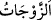
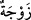
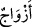
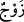
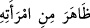

Orada hiç kimseye karşı kin sığamaz.
Kim de kalbi ve kalıbıyla dünyâ ile meşgul olur, sonra da kalkıp âhireti, hatta Allâh’ı
sevdiğini iddiâ ederse bu kişi iddiâsında yalancıdır.
Cemşîd, dünyâya kadeh hikâyesinden başka bir şey bırakmadı,
Sakın dünyâ işlerine gönül bağlama!
“Zıhâr” yaptığınız”: ‘Siz bize, haram kılınma bakımından annelerimizin sırtı
gibisiniz’ dediğiniz “eşlerinizi de” kadınlarınızı da “analarınız yerinde” gibi
“tutmadı”
“ kelimesi, “nin çoğulu olduğu gibi “ kelimesi de “ kelimesinin
çoğuludur. Her ne kadar “ kelimesi daha meşhursa da “ kelimesi daha fasihtir.
“ ifâdesinin mânâsı, hanımına ‘Sen bana anamın sırtı gibisin’ demesidir.
Böyle söylemek Câhiliyye devrinde talâk sayılırdı ve onlar boşanmış kadınlardan uzak
dururlardı. Yâni Câhiliyye devrinin talâkı şöyleydi: Onlar hanımlarına: “Sen bana
annemin sırtı gibisin, yâni sen bana annemin karnı gibi haramsın.” derlerdi. Onlar adının
anılması mahrem yerin adının anılmasına yakın olan karnı zikretmemek için karından
kinâye olarak sırtı söylerlerdi. Sırt karnın direği olduğu ve bünyeyi ayakta tuttuğu için
sırt kelimesi karından kinâye yapılmıştır.
Yâni Allah hem eş hem de anne olma vasfını bir kadında toplamadı. Çünkü anne
kendisine hizmet edilendir ve onun hakkında tasarrufta bulunulamaz. Eş ise hizmet
edendir ve onun hakkında tasarrufta bulunulabilir. Burada kastedilen Araplar’ın
kendisine zıhar yapılan eşin anne gibi olduğu inancının ortadan kaldırılmasıdır.
Keşfü’l-esrâr’da der ki: “İslâm gelince Rabbü’l-âlemîn’in doğru dîni bunun için
keffâret ortaya koydu ve din ona ‘zıhâr’ adını verdi.”
Zıhar, İslâm’da keffâret ödenene kadar talâkı ve haramlığı gerektirir. Zıhar keffâreti
ise bir köle âzâd etmek, buna muktedir olamazsa araya ramazan, bayram ve teşrik
günleri gibi oruç tutmanın yasak olduğu günler girmemek şartıyla iki ay peş peşe oruç
tutmaktır. Buna da muktedir olamazsa altmış fakiri doyurmaktır. Her fakire bir fitre
miktarı yahut onun bedelini vermektir.
Bir kimsenin eşine ‘Sen bana annemin sırtı gibisin’ demesinin -ister zıhâra niyet etsin,
ister etmesin- zıhardan başka bir şeye ihtimâli yoktur. Bu ifâde, talâk veya îlâ (Kocanın,
eşiyle cinsel ilişkide bulunmamak üzere yaptığı yemin) de olmaz. Çünkü bu sözün zıhar
olduğu açıktır.
Şâyet kişi hanımına “Sen bana annem gibisin” dese, eğer bu sözle eşine değer
vermeye niyet etmişse, yâni ‘Ben eşimin bana annem gibi değerli olduğunu kastettim’
derse doğru söylediği kabul edilir. Eğer bu sözle zıhârı kastetmiş ise zıhar, talâkı
kastetmiş ise bâin talâk olur. Şâyet hiç bir şeye niyet etmemişse bu söz hükümsüzdür.